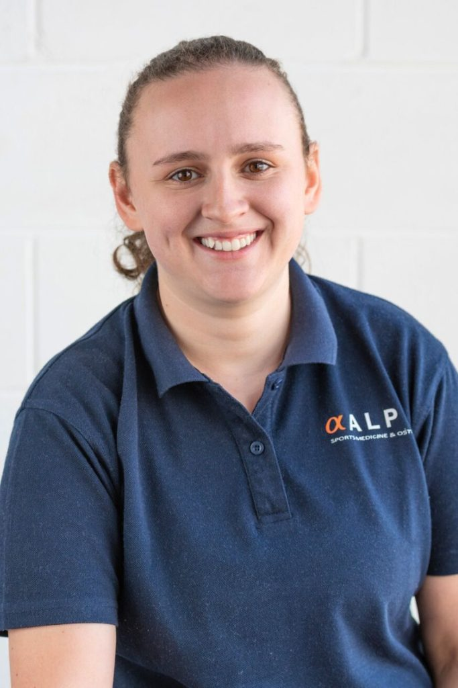

Alpha Sports Medicine
You've tried things. A few appointments, a sheet of exercises, maybe told to rest it. And here you are, still working around the same problem. At Alpha Sports Medicine we run hands-on treatment and exercise rehab as one plan — so we can get to the root of it, not just quiet it down for a fortnight.
Sound familiar?
If any of this is going through your head, you're in the right place:
"Nothing I've tried has actually worked." The pain settles, then comes straight back the moment you get going again.
"I'm scared of making it worse." So you've backed off the running, the gym, the things you actually enjoy.
"I don't think anyone really listened." You got a quick look and a generic plan that could've been handed to anyone.
"Is this just another expensive thing that won't stick?"
"I don't even know who I'm supposed to see — a physio, an osteo, a chiro?"
If it keeps coming back, it's usually because nobody's found the why yet — the thing loading that painful bit in the first place. Rest has its place, but rest on its own rarely fixes it; a managed, gradual return to load almost always beats sitting still and hoping.
That's the whole idea behind Alpha. It's not textbook treatment. It's treatment tailored to you — because we get to the root of the problem to unlock your potential.
Start with what hurts
You don't need to know whether you need a physio, an osteo or a chiro. That's our job. Tell us what's going on and what it's stopping you doing — we'll take it from there.
The Alpha approach
Your initial consult is 45 minutes, and we spend it understanding the person, not just the sore spot. What have you already tried? What is this stopping you doing? What do you actually want to get back to?
We assess past the painful bit to the thing loading it — how you move, what you're asking your body to do, and where it's breaking down.
You get treatment in the room and a programme built around your training, your week and your goal. Not a photocopied exercise sheet — a plan that fits your actual life.
Getting out of pain is the start. We keep going through the rebuild, so the problem has a real reason not to come back. We re-test at the end of every session, so you leave knowing what changed.
One team, every discipline
You get the one you need — often more than one. Hands-on treatment sitting alongside exercise rehab in the same building is the model most clinics in the west don't run. It's how we treat the problem instead of the modality.
Melbourne's west
Meet the people
Alpha started in 2017 when Dr Ashton Wilson and Dr Will Krithararis set out to build the clinic they could never find for themselves — one that actually gets to the bottom of things and stays with you until you're back to it. The team has grown since, but the approach hasn't changed: real people, real energy, genuinely good to be around.

More than a clinic
Alpha's part of the community it treats. We run the RunWest Run Club, partner with local gyms, and turn up to the events our patients care about. It's how a clinic becomes a place people belong, not just somewhere they go when something hurts.
Good to know
No. You can book directly with any practitioner. GP or specialist referrals are welcome, and EPC/DVA arrangements are handled separately.
Yes, for most services. Bring your health fund card and we'll process the rebate on the spot where your cover allows.
45 minutes — long enough to properly assess, explain what's going on, and start a plan.
Not sure? Book anyone, or tell us what's going on and we'll point you. Working out who you need is our job, not yours.
Activewear. You'll probably be moving.
Ready when you are
There's no pressure here. When you're ready, we're ready. We'll listen, we'll find the root of it, and we'll have your back through the whole thing.
Not sure which practitioner you need? Tell us what's going on